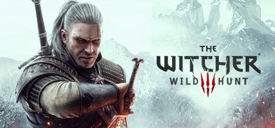

Рік виходу: 2015
Жанр: RPG
Геральт шукає Цірі і подорожує по великому світу. У грі багато монстрів, сіл, міст і різних завдань. Мені здається, що ця гра цікава через вибори, бо не завжди є правильна відповідь.